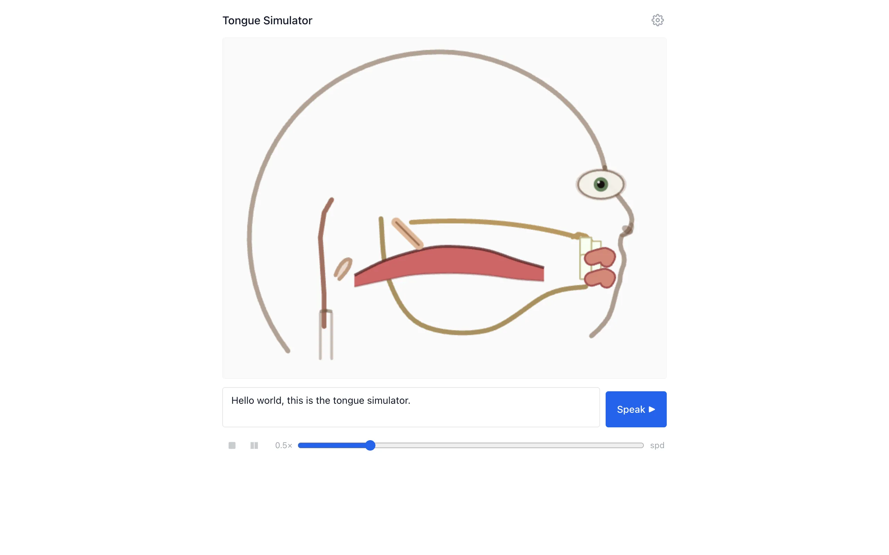

When you speak, your tongue is doing something incredibly complex. It's a muscular hydrostat with no skeleton, deforming continuously through a sequence of target shapes that correspond to the sounds you're producing. Linguists have studied these shapes for over a century using X-ray imaging, MRI, and electromagnetic articulography. But most of us have never actually seen what's happening inside our mouths during speech. This project makes it visible.

{kind=link}
Type some text, hit play, and the browser speaks the text aloud while rendering a midsagittal cross-section of the vocal tract. The tongue, jaw, velum, and lips all animate through their articulation targets in sync with the audio. The tongue doesn't just jump between positions. It deforms physically, simulated as a soft body using position-based dynamics.
The pipeline
The system has four stages. First, the input text goes through grapheme-to-phoneme conversion, producing a sequence of ARPAbet phoneme codes. Second, a gestural phonology model generates smooth articulatory target trajectories for each phoneme. This is where the mapping from abstract sound categories to physical tongue positions happens. Third, a PBD simulation computes the actual tongue mesh deformation across the entire phoneme sequence. And fourth, the Web Speech API synthesizes the audio while a canvas renderer draws the synchronized animation frame by frame.
The key insight is that the simulation is pre-computed, not real-time. When you hit play, the Rust code runs the full PBD simulation for every frame in the utterance, stores the results, and then the JavaScript playback loop just reads from the pre-computed buffer while the speech plays. This means the physics can be as expensive as needed without causing frame drops during playback.

{kind=link}
Why position-based dynamics
PBD is a simulation technique originally developed for real-time cloth and soft body animation in games. Unlike traditional finite element methods that solve force equations, PBD works by directly manipulating particle positions to satisfy constraints. You define a mesh of particles connected by distance constraints and volume-preservation constraints, then iteratively project the particles toward valid configurations. It's unconditionally stable (no exploding simulations) and fast enough to run in WASM without making the user wait.
The tongue mesh is a 2D cross-section of particles connected in a triangular lattice. Each articulation target defines desired positions for a subset of control particles, and the rest of the mesh follows through the constraint solver. The velum and jaw are simpler rigid or semi-rigid bodies that interpolate between target poses. Lips are modeled as a pair of points that open, close, round, and spread.
Rust and WASM
The physics code is written in Rust and compiled to WebAssembly using wasm-bindgen. The codebase is about 60% Rust and 40% TypeScript. The frontend uses React for the UI and HTML5 Canvas for rendering. A Makefile handles the build: compiling Rust to WASM, then bundling the frontend with npm. GitHub Actions deploys to Pages on every push to main.
Keeping the simulation in Rust matters for performance. The PBD solver runs hundreds of constraint iterations per frame across the full utterance. In JavaScript this would be noticeably slow on longer inputs. In compiled WASM, it finishes in a fraction of a second for typical sentences.